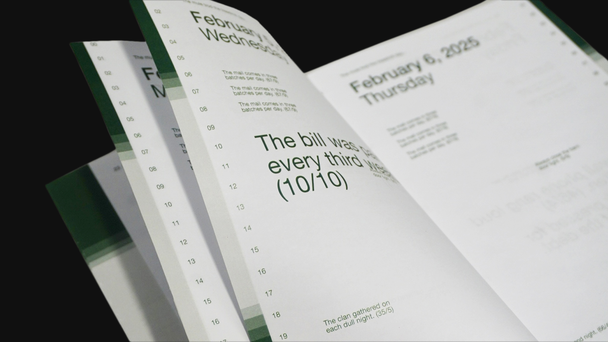
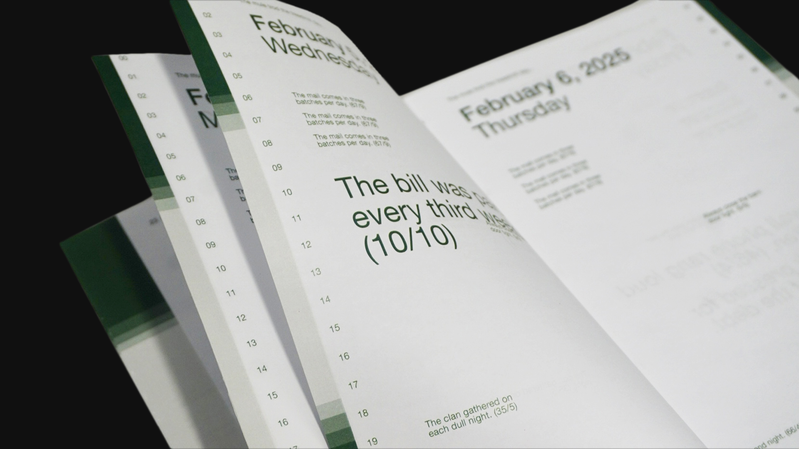

This project was selected for the Applied Arts Student Awards 2025 ↗ for the Editorial Design Entire Book/Magazine - Single category.
There is a Strong Change it Will Happen Once More is a publication about routine and time derived from a curated collection of the 720 Harvard Sentences. These themes are supplemented by major solar and lunar events, hours of daylight, moonrise and moonset, and the moon cycle, highlighting the repetitive systems of time that we live under.
Each section of the book slowly zooms in on time, starting from a monthly calendar to a weekly one to a daily calendar. The latter establishes the daily routine and shows how it is being perpetually disrupted. After February 2025 ends, the timeline moves forward, zooming out to seasons and years.
Each calendar type has a corresponding hierarchy of lunar and solar routines. The weekly calendars have the moon phase, moonset, moonrise, and meridian passing aligned to each hour of the day. This is found on the left side of the spread which also shows the average sunrise and sunset times for that week, creating a pseudo flip-book effect. The daily calendars have the moon phase and sunrise and sunset times. The seasonal calendars mark the solstices and equinoxes, and the yearly calendar shows any major lunar or solar event such as an eclipse.
 
